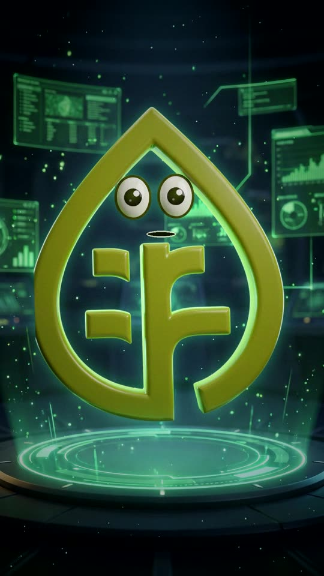
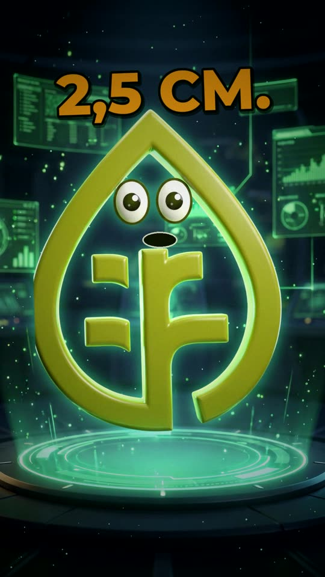
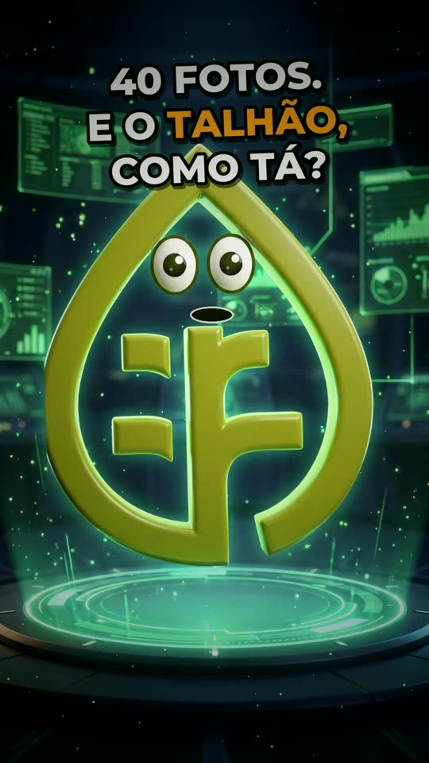
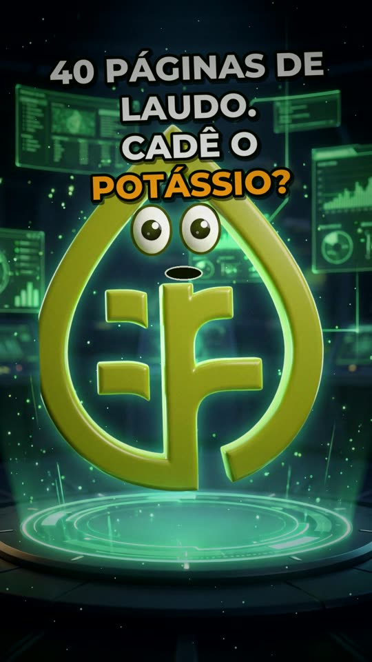
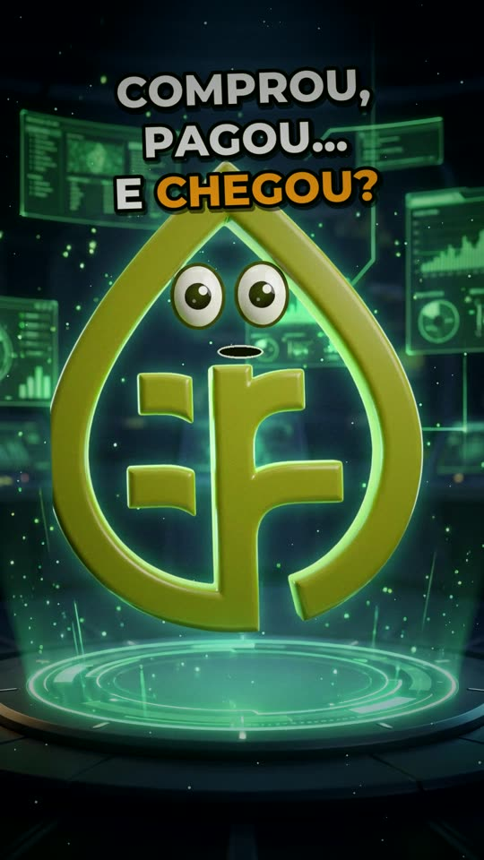

SÉRIE · MANDA PRO OSCAR
Manda pro Oscar.
Manda pro Oscar.
Ele anota. Você decide.
O Oscar mora no seu WhatsApp. Você manda do campo — ele devolve o relatório, o mapa, a chuva da sua fazenda, o estoque e as contas. Sem caderno, sem planilha, sem relatório à noite.
SÉRIE · MANDA PRO OSCAR
Cada episódio, uma dor do campo resolvida.
Um minuto cada. Tudo o que aparece é função de verdade do app — toque para assistir.

▶
EP. 1
A visita que vira relatório

▶
EP. 2
Plantio conferido no talhão
▶
EP. 3
O relatório com a SUA marca
▶
EP. 4
Choveu quanto na SUA fazenda?

▶
EP. 5
A média do talhão, não o ponto
▶
EP. 6
O lado a lado que não perde visita
▶
EP. 7
Dinheiro da fazenda × de casa
▶
EP. 8
Caderno de campo sem caneta

▶
EP. 9
O mapa do solo no zap

▶
EP. 10
O galpão no bolso
COMO COMEÇAR
Três passos e ele já trabalha.
1
Chame no WhatsApp e escreva OSCAR.
2
Faça o cadastro rápido ali mesmo: nome, cidade e a sua fazenda ou empresa.
3
A equipe libera o acesso e você já manda a primeira visita.